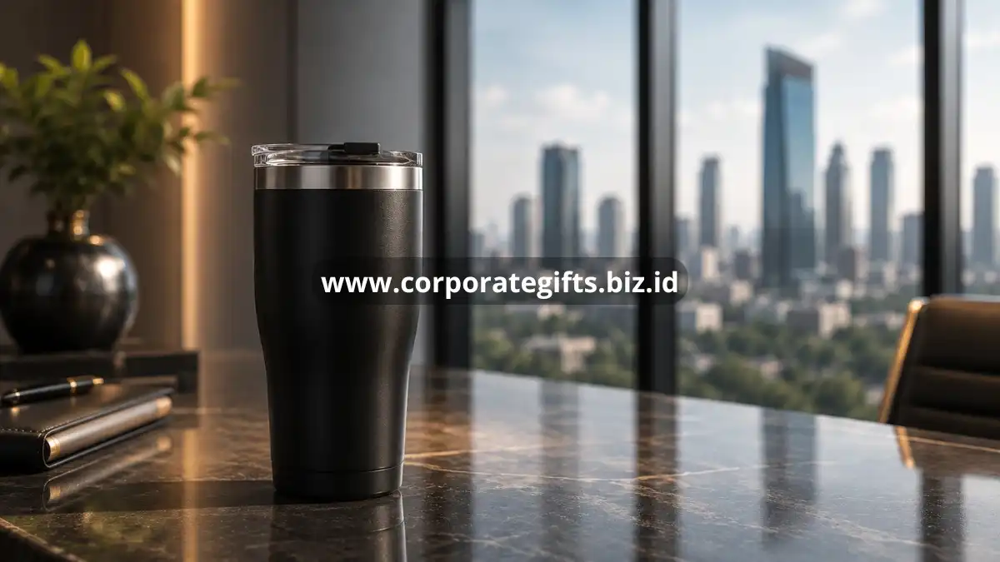

Poin Penting:
- Corporate gifts untuk klien paling efektif ketika mencerminkan identitas brand sekaligus memberi manfaat nyata bagi penerima.
- Kategori paling diminati mencakup elektronik custom branding, gift set eksekutif, hadiah personalisasi, dan produk ramah lingkungan.
- Budget corporate gifts sebaiknya disesuaikan dengan tingkatan relasi klien, bukan disamaratakan untuk seluruh penerima.
- Waktu pemberian yang tepat memperbesar peluang hadiah diingat dan dihargai oleh klien.
- CorporateGifts menyediakan seluruh kategori hadiah korporat ini dengan opsi personalisasi logo dan kemasan premium.
Dua puluh ide corporate gifts berikut disusun berdasarkan nilai kesan, kualitas bahan, dan relevansinya bagi klien korporat di Indonesia, lengkap dengan cara memilih dan estimasi budget yang wajar.
Mengapa Corporate Gifts untuk Klien Penting bagi Bisnis?
Corporate gifts untuk klien penting karena menjadi bentuk komunikasi non-verbal yang menunjukkan apresiasi perusahaan atas kepercayaan dan kerja sama yang telah terjalin. Menurut survei industri corporate gifting yang banyak dikutip pelaku bisnis pada periode 2024-2025, mayoritas profesional korporat menyatakan lebih mengingat perusahaan yang memberikan hadiah berkualitas dibandingkan yang hanya mengirim ucapan formal. Hadiah yang tepat dapat memperkuat brand recall, mempererat loyalitas, dan membuka peluang kerja sama lanjutan.
Selain aspek relasi, corporate gifts juga berfungsi sebagai media branding berjalan. Setiap kali klien menggunakan produk yang diberikan, logo dan identitas perusahaan Anda kembali terlihat, menciptakan pengingat berkelanjutan tanpa biaya iklan tambahan. Efek ini semakin kuat apabila hadiah dipilih dengan mempertimbangkan gaya hidup dan kebutuhan penerima, bukan sekadar barang generik.
Corporate Gifts Elektronik dan Gadget untuk Klien Korporat
Corporate gifts berbasis elektronik menjadi favorit karena fungsional dan sering digunakan dalam aktivitas kerja sehari-hari klien. Kategori ini cocok untuk klien yang aktif bepergian maupun bekerja di lingkungan kantor modern.
- Power bank custom branding. Perangkat ini praktis dibawa bepergian dan memberi eksposur logo setiap kali digunakan di ruang publik atau rapat.
- Wireless charger dengan logo perusahaan. Cocok diletakkan di meja kerja klien sehingga logo perusahaan Anda terlihat setiap hari.
- Flashdisk desain eksklusif. Meski sederhana, item ini tetap relevan untuk klien yang sering bertukar dokumen fisik dalam pertemuan bisnis.
- Speaker portabel premium. Pilihan tepat untuk klien yang menyukai gaya hidup dinamis dan sering menghadiri acara di luar kantor.
- Smart notebook digital. Menggabungkan kesan modern dan fungsional, cocok untuk klien di posisi manajerial yang aktif mencatat selama rapat.
Corporate Gifts Premium Bergaya Eksekutif
Kategori ini ideal untuk klien pada level pengambil keputusan, seperti direktur atau pemilik perusahaan mitra, karena menonjolkan kesan mewah dan profesional.
- Gift set pena dan buku catatan kulit. Kombinasi klasik yang selalu relevan untuk klien di posisi eksekutif senior.
- Dompet atau card holder kulit dengan emboss logo. Barang harian yang sering digunakan sehingga memperpanjang durasi eksposur brand.
- Jam meja eksekutif bermaterial premium. Sangat sesuai untuk ditempatkan di ruang kerja klien sebagai elemen yang dekoratif dan juga fungsional.
- Tumbler atau termos stainless premium. Praktis digunakan setiap hari, baik di kantor maupun saat bepergian.
- Paket kopi atau teh premium dalam kemasan eksklusif. Memberi kesan personal karena berkaitan dengan kebiasaan konsumsi harian klien.

Corporate Gifts Personalisasi dan Custom Branding
Personalisasi membuat penerima merasa hadiah dirancang khusus untuknya, bukan sekadar produk massal. Pendekatan ini terbukti meningkatkan kesan positif klien terhadap perusahaan pemberi.
- Hampers dengan nama klien tercetak. Sentuhan pribadi ini menjadikan hadiah tersebut terasa lebih dekat secara emosional.
- Merchandise custom dengan warna sesuai identitas brand klien. Menunjukkan bahwa perusahaan Anda memperhatikan detail dan menghargai relasi kerja sama.
- Kartu ucapan tulisan tangan dengan hadiah pendamping. Kombinasi sederhana namun berdampak besar pada kesan personal.
- Paket parsel custom sesuai preferensi klien. Cocok untuk momen tertentu seperti akhir tahun atau ulang tahun perusahaan klien.
- Frame foto atau plakat penghargaan kerja sama. Simbol apresiasi yang biasanya dipajang di ruang kerja klien dalam jangka panjang.
Corporate Gifts Ramah Lingkungan dan Berkelanjutan
Tren keberlanjutan turut memengaruhi preferensi corporate gifts. Banyak perusahaan kini memilih hadiah yang mencerminkan kepedulian lingkungan sebagai bagian dari citra tanggung jawab sosial.
- Tas kanvas ramah lingkungan dengan sablon logo. Fungsional dan mendukung gaya hidup rendah plastik.
- Botol minum reusable berbahan stainless atau kaca. Mengurangi penggunaan plastik sekali pakai sekaligus tetap elegan.
- Peralatan tulis dari bahan daur ulang. Cocok untuk klien yang memperhatikan aspek keberlanjutan dalam operasional bisnisnya.
- Tanaman meja mini dalam pot custom. Memberi kesan segar dan menenangkan di ruang kerja klien.
- Paket produk lokal UMKM dalam kemasan korporat. Selain ramah lingkungan, pilihan ini turut mendukung ekonomi lokal dan memberi nilai cerita tersendiri.
Bagaimana Cara Memilih Corporate Gifts yang Tepat untuk Klien?
Cara memilih corporate gifts yang tepat untuk klien dimulai dengan memahami profil penerima, termasuk posisi, preferensi, dan konteks relasi bisnis yang sedang dibangun. Hadiah yang relevan dengan kebutuhan klien cenderung lebih dihargai dibandingkan barang generik tanpa pertimbangan khusus.
Beberapa faktor yang perlu dipertimbangkan meliputi kualitas material, kesesuaian dengan identitas brand pemberi, tingkat personalisasi, serta kepraktisan penggunaan sehari-hari. Hadiah yang terlalu mencolok secara promosi justru dapat mengurangi kesan elegan, sehingga branding sebaiknya diterapkan secara halus dan proporsional pada kemasan maupun produk.
Berapa Budget Ideal untuk Corporate Gifts Klien?
Budget ideal untuk corporate gifts klien umumnya disesuaikan dengan tingkat kedekatan relasi dan skala kerja sama yang berjalan, bukan angka tetap yang berlaku untuk semua penerima. Klien strategis dengan nilai kerja sama besar biasanya mendapat alokasi hadiah lebih tinggi dibandingkan klien baru atau relasi tahap awal.
Sebagai gambaran umum, banyak perusahaan menetapkan tiga tingkatan budget, yaitu kategori standar untuk relasi umum, kategori menengah untuk klien aktif, dan kategori premium untuk klien strategis atau pengambil keputusan utama. Pendekatan bertingkat ini membantu menjaga efisiensi anggaran tanpa mengurangi kesan penghargaan kepada klien penting.
Kesalahan Umum saat Memberikan Corporate Gifts kepada Klien
Beberapa kesalahan yang sering terjadi antara lain memilih hadiah tanpa mempertimbangkan relevansi terhadap kebutuhan klien, menerapkan branding secara berlebihan sehingga terkesan seperti media promosi murahan, serta mengabaikan kualitas kemasan yang turut memengaruhi kesan pertama saat hadiah diterima. Kesalahan lain adalah memberikan hadiah pada waktu yang kurang tepat, misalnya terlalu berdekatan dengan momen penting lain sehingga kurang mendapat perhatian penuh dari penerima.
Corporate gifts untuk klien yang dipilih dengan tepat mampu memperkuat relasi bisnis, meningkatkan brand recall, dan menciptakan kesan profesional yang bertahan lama. Dua puluh ide di atas, mulai dari elektronik custom branding hingga produk ramah lingkungan, dapat disesuaikan dengan profil dan tingkat kedekatan klien Anda. Jika Anda ingin memastikan setiap hadiah tampil premium dan personal, CorporateGifts siap membantu mewujudkan corporate gifts untuk klien Anda mulai dari konsep, personalisasi logo, hingga pengemasan eksklusif. Hubungi CorporateGifts sekarang untuk konsultasi dan pemesanan corporate gifts yang berkesan bagi klien Anda.
FAQ
1. Mengapa corporate gifts penting untuk klien bisnis?
Corporate gifts berfungsi sebagai komunikasi non-verbal yang menunjukkan apresiasi, memperkuat loyalitas, dan menjadi media branding yang berkelanjutan.
2. Apa saja corporate gifts kategori elektronik yang direkomendasikan?
Rekomendasi terbaik meliputi power bank custom, wireless charger, flashdisk eksklusif, speaker portabel, dan smart notebook digital.
3. Kapan waktu yang tepat untuk memberikan corporate gifts bergaya eksekutif?
Hadiah bergaya eksekutif seperti set pena kulit atau jam meja sangat cocok diberikan kepada pengambil keputusan atau direktur perusahaan mitra pada momen khusus.
4. Berapa budget ideal untuk corporate gifts klien?
Budget ideal disesuaikan dengan tingkat kedekatan relasi; klien strategis mendapat alokasi premium, sementara klien umum mendapatkan kategori standar.
5. Apa kesalahan umum saat memberikan corporate gifts?
Kesalahan umum meliputi tidak mempertimbangkan relevansi hadiah, branding yang terlalu berlebihan, kemasan berkualitas rendah, dan waktu pemberian yang kurang tepat.
Butuh rekomendasi cepat untuk corporate gift?
Chat tim Pusat Souvenir & Merchandise Kantor untuk kurasi pilihan sesuai budget & kebutuhan brand Anda.